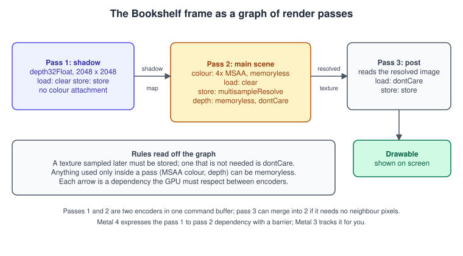
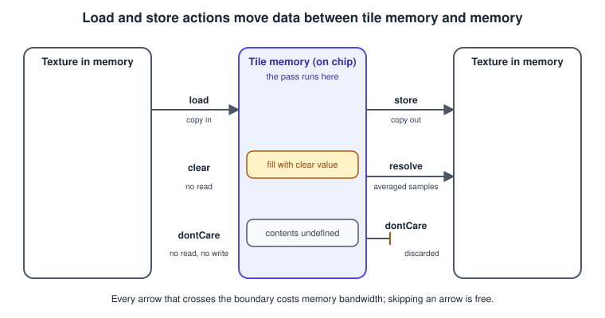
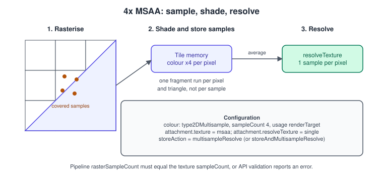
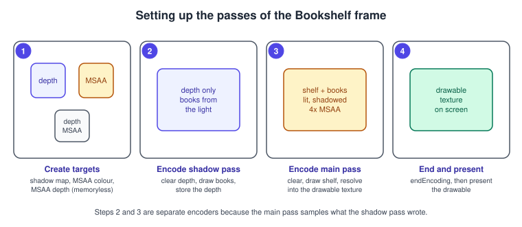

Render Passes and Load/Store Actions in Metal
|
This content was generated with the assistance of AI and should be verified against the official documentation before being relied on in production. |
A render pass is a sequence of draw calls that all write to the same set of attachments (colour textures, a depth texture and optionally a stencil texture). It is the unit in which Metal talks to the GPU about memory: you say which textures the pass renders into, what to do with their contents when the pass starts (load action) and what to do with them when it ends (store action). On Apple GPUs, which render in small on-chip tiles, those two decisions determine how much data crosses the memory bus, and therefore battery life, heat and often frame rate. This page explains the descriptor and every setting of an attachment, the tile-based reason the actions matter, how several passes form a frame, how multisampling resolves, what a memoryless target is and when it applies, and how the dependency between passes is expressed under Metal 3 and Metal 4.
The facts were checked in November 2026. The code is Swift 6 and MSL, written against the 26 SDKs; the render-pass descriptor, load and store actions and MTLStorageMode.memoryless are part of the Metal 3 API
(memoryless since iOS 10 and, on Apple silicon Macs, macOS 11) and are unchanged in Metal 4, which adds MTL4RenderPassDescriptor, MTL4RenderCommandEncoder and explicit barriers (26 OSes; A14 Bionic or later, Apple silicon Macs and Apple Vision Pro). MSL 4.0 is enough
for the shaders; MSL 4.1 belongs to the 27 operating systems and nothing here depends on it. The Xcode setup is in
Setting Up Xcode and a Metal Project and the reason Apple GPUs behave this way is explained in
GPU Architecture and TBDR.
This page serves steps 4 to 6 of the Metal Bookshelf running example (a multiplatform SwiftUI app hosting an MTKView, with a visionOS target later): the shelf with
Shadows needs two passes, one that renders the depth of the scene from the lamp and one that renders the lit scene with 4x multisampling; the later post-processing and
upscaling steps add more passes to the same frame. The general idea of offscreen rendering is in The Rendering Pipeline; the OpenGL counterpart is
Framebuffers and Render to Texture and the WebGL one is
Framebuffers and Render to Texture in WebGL.
The pass graph of the Bookshelf frame

Reading the graph answers most configuration questions. The shadow pass renders only depth, and the main pass samples it, so its depth must be stored. The main pass renders into a 4x multisampled colour target that nobody reads afterwards except the resolve, so only the resolved single-sample image needs to be stored, and the multisampled data can stay in tile memory and never exist in RAM. The depth buffer of the main pass is needed during the pass for depth testing and not after it, so it is dontCare on store. A rule of thumb that follows: for every attachment ask what reads it next. If nothing does, do not store it. If nothing needs the previous contents, do not load them.
MTLRenderPassDescriptor
MTLRenderPassDescriptor is a value you fill in per pass (it is cheap to create, and an MTKView creates one for you every frame in currentRenderPassDescriptor). Its properties:
| Property | Meaning | Notes |
|---|---|---|
|
Up to eight colour attachments (MRT) |
Fewer on some devices; each is an |
|
Depth attachment ( |
Adds |
|
Stencil attachment |
Adds |
|
Number of layers when rendering to a texture array or 3D texture slices |
Needed for layered rendering, such as all shadow cascades in one pass; the vertex function chooses the layer with |
|
Buffer that receives occlusion query counts |
Set per draw with |
|
Variable-rate rasterisation |
Used by Vision Pro foveated rendering, see Metal on visionOS. |
|
Sample count for a pass with no attachments |
Used when a pass only writes through buffers or textures. |
|
Tile size and the memory a tile shader may use |
Only for tile shaders; see Deferred and Tile Shading. |
|
Counter sample buffers |
For GPU timing inside a pass; see Debugging and Profiling. |
Each attachment, colour, depth or stencil, shares a base set of properties:
| Property | Default | Meaning |
|---|---|---|
|
none |
The texture rendered into. Its |
|
0, 0, 0 |
Which mip level, array slice (or cube face) or 3D slice is rendered. A shadow-cascade pass sets |
|
|
What happens to the attachment’s contents when the pass starts. |
|
|
What happens when the pass ends. A descriptor you create yourself discards the result unless you set |
|
(0, 0, 0, 1), 1.0, 0 |
The value used by |
|
none |
Destination of a multisample resolve. |
|
none |
Modifies the store (for example with custom sample positions). |
Load actions
The load action says what is in the attachment when the first draw call executes. There are exactly three.
| Action | What the GPU does | Use when |
|---|---|---|
|
Reads the texture’s current contents from memory into tile memory |
Rendering on top of an earlier pass (a second pass that adds to the image) or a UI overlay. Costs a full read of the attachment. |
|
Fills the tile with the clear value; reads nothing |
The default choice for a pass that draws a whole frame. Effectively free. |
|
Does nothing; the contents are undefined |
The pass will overwrite every pixel before reading it (for example a full-screen draw), or the attachment is a depth buffer that is always cleared by a draw. Effectively free, and the fastest option. |
.dontCare on an attachment that the pass does not fully cover leaves old or random data in the uncovered pixels, which looks like flicker or trails and changes from run to run. When in doubt, use .clear.
Store actions
| Action | What the GPU does | Use when |
|---|---|---|
|
Writes the tile to the texture |
The texture is read later: sampled by another pass, presented, read back. |
|
Discards the tile; the texture’s contents become undefined |
The attachment is only needed during the pass: depth buffers, multisampled colour after resolve. |
|
Averages the samples of each pixel into |
The usual choice for MSAA colour. |
|
Does both |
You need the multisampled data later too (rare, for example a custom resolve). |
|
Defers the decision |
Set the real action later with |
A texture written with .dontCare and sampled afterwards produces black, garbage or the previous frame, with no error unless Metal API validation is on. This is the classic cause of "my shadow map is empty".
Why the actions matter: tile memory

An Apple GPU divides the render target into tiles (typically 16 x 16 to 32 x 32 pixels, chosen by the hardware), sorts the geometry of the pass by tile, and then renders each tile completely in fast on-chip tile memory. Depth testing, blending and MSAA resolve all happen there. Memory is touched only at the pass boundaries: the load action at the start and the store action at the end. A pass that clears and stores one colour attachment therefore writes each pixel once, no matter how many triangles overlap it (overdraw is free of bandwidth), and an opaque scene needs no depth buffer in memory at all.
For a 1920 x 1080 RGBA8 target (8.3 MB), .load adds an 8.3 MB read per frame, .store an 8.3 MB write, and a depth buffer that is stored when it is not needed adds a second write. At 60 frames per second
a careless depth store costs about half a gigabyte per second of bandwidth for nothing; a fully loaded and stored 4x MSAA colour target (33 MB each way) is four times worse. The full picture
(why splitting a pass costs more than it looks) is in GPU Architecture and TBDR. The practical guidance:
-
Clear or
dontCareon load whenever possible. Use.loadonly for a pass that really builds on earlier results. -
Never store depth unless something samples it later; shadow maps and depth pre-passes are the exceptions.
-
Resolve MSAA in the store action, never with a separate pass.
-
End a pass as late as possible. Every
endEncodingflushes tile memory, so two passes that could be one (for example a pass that draws the scene and a pass that draws the UI) cost a full store and load of the colour attachment.
Desktop (Intel and AMD) GPUs, which render in immediate mode, handle the same descriptor but do not benefit equally; Apple silicon Macs behave like the iPhone, which is why one code path serves both.
MSAA and the resolve

Multisample anti-aliasing smooths the edges of triangles. The rasteriser tests coverage at several sample positions per pixel (2, 4 or 8, depending on device), runs the fragment function once per pixel and triangle, and stores the result in the covered samples. When the pass ends the samples of each pixel are averaged into one colour. Settings:
-
Texture.
textureType = .type2DMultisample,sampleCountset (checkdevice.supportsTextureSampleCount(4)),usagecontaining.renderTarget. The multisampled texture has no mipmaps and cannot be sampled by the ordinarytexture2d; shaders usetexture2d_msandreadif they need the individual samples. -
Resolve texture. A single-sample texture of the same size and pixel format, set as
resolveTexture. It can be the drawable’s texture. -
Pipeline.
MTLRenderPipelineDescriptor.rasterSampleCount(legacy namesampleCount) must equal the attachments' sample count, or API validation reports an error. -
Depth. The depth attachment of an MSAA pass is multisampled as well. If a later pass needs it,
depthResolveFilterchooses how to combine samples:.sample0(the default, the first sample),.minor.max. Combining depth by averaging would be wrong, which is why it is not offered. -
Alpha to coverage.
isAlphaToCoverageEnabledon the pipeline turns the fragment’s alpha into a sample coverage mask, giving smooth edges for foliage and hair without sorting; it needs MSAA. -
Cost. With the multisampled textures in tile memory (see memoryless below), 4x MSAA costs fragment-coverage work and tile memory, but almost no extra bandwidth, which is why it is the default quality setting on Apple GPUs.
The easy path: MTKView.sampleCount
If the view is the only target, let MTKView do everything. It creates the multisampled colour and depth textures, recreates them when the drawable size changes and fills the resolve into currentRenderPassDescriptor:
let view = MTKView(frame: .zero, device: device)
view.colorPixelFormat = .bgra8Unorm_srgb
view.depthStencilPixelFormat = .depth32Float
view.sampleCount = 4 // MTKView now manages the multisample textures
let desc = MTLRenderPipelineDescriptor()
desc.rasterSampleCount = view.sampleCount // must match
desc.colorAttachments[0].pixelFormat = view.colorPixelFormat
desc.depthAttachmentPixelFormat = view.depthStencilPixelFormatSource: MetalKit: MTKView sampleCount
The view’s own textures are always allocated in memory, and you cannot choose their storage mode. When you want the memoryless savings, or the main pass is one of several, create the targets yourself as below.
Memoryless render targets
A texture with storageMode = .memoryless has no backing memory at all: it exists only as tile memory while a pass runs. It is the logical end of the rule "do not store what nothing reads". Constraints:
-
Only attachments can be memoryless, and only with
loadActionof.clearor.dontCareandstoreActionof.dontCare(or.multisampleResolvefor MSAA colour, which resolves out of tile memory). -
It cannot be sampled by a later pass, read back by the CPU, used for blits or bound as an ordinary texture; its contents die with the pass.
-
MTLStorageMode.memorylessis available from iOS 10, tvOS 10 and visionOS 1, and on macOS from 11 for Apple GPUs; Intel and AMD GPUs on a Mac do not support it, so fall back to.privatethere (for example withdevice.supportsFamily(.apple1)). -
Typical candidates: the depth buffer of any pass that does not feed another pass, the multisampled colour of an MSAA pass, and the G-buffer attachments of a tile-shader deferred renderer (see Deferred and Tile Shading).
On a 1080p frame, a memoryless 4x MSAA colour (33 MB) and a memoryless depth (8 MB with a 32-bit format, 33 MB at 4x) save about 40 to 70 MB of memory footprint and the corresponding bandwidth. Memory footprint matters on iPhone, where the system terminates apps that use too much; it is one of the checklist items of Performance Best Practices.
Complete example: shadow pass and main pass

The class below owns the render targets and builds the two pass descriptors. The two pipelines (a depth-only pipeline for the shadow pass and the lit pipeline with rasterSampleCount = 4) are created elsewhere; their vertex and fragment functions are the
ones of Lighting Fundamentals and Shadows.
import MetalKit
final class FrameTargets {
static let shadowSize = 2048
static let sampleCount = 4
let device: MTLDevice
let shadowMap: MTLTexture
private(set) var msaaColor: MTLTexture
private(set) var msaaDepth: MTLTexture
private let colorFormat: MTLPixelFormat
private let depthFormat = MTLPixelFormat.depth32Float
private let transientStorage: MTLStorageMode
init?(device: MTLDevice, drawableSize: CGSize, colorFormat: MTLPixelFormat) {
guard device.supportsTextureSampleCount(Self.sampleCount) else { return nil }
self.device = device
self.colorFormat = colorFormat
// Memoryless exists on Apple GPUs only; fall back to private elsewhere.
transientStorage = device.supportsFamily(.apple1) ? .memoryless : .private
// Shadow map: depth only, written in pass 1 and sampled in pass 2.
let sd = MTLTextureDescriptor.texture2DDescriptor(pixelFormat: .depth32Float,
width: Self.shadowSize, height: Self.shadowSize, mipmapped: false)
sd.usage = [.renderTarget, .shaderRead]
sd.storageMode = .private
guard let shadow = device.makeTexture(descriptor: sd) else { return nil }
shadow.label = "Shadow map"
shadowMap = shadow
guard let targets = Self.makeMSAATargets(device: device, size: drawableSize, colorFormat: colorFormat,
depthFormat: .depth32Float, storage: transientStorage) else { return nil }
msaaColor = targets.color
msaaDepth = targets.depth
}
/// Call from mtkView(_:drawableSizeWillChange:).
func resize(to size: CGSize) {
if let t = Self.makeMSAATargets(device: device, size: size, colorFormat: colorFormat,
depthFormat: depthFormat, storage: transientStorage) {
msaaColor = t.color
msaaDepth = t.depth
}
}
private static func makeMSAATargets(device: MTLDevice, size: CGSize, colorFormat: MTLPixelFormat,
depthFormat: MTLPixelFormat, storage: MTLStorageMode)
-> (color: MTLTexture, depth: MTLTexture)? {
func make(_ format: MTLPixelFormat, _ label: String) -> MTLTexture? {
let d = MTLTextureDescriptor()
d.textureType = .type2DMultisample
d.pixelFormat = format
d.width = max(Int(size.width), 1)
d.height = max(Int(size.height), 1)
d.sampleCount = sampleCount
d.usage = .renderTarget
d.storageMode = storage
let t = device.makeTexture(descriptor: d)
t?.label = label
return t
}
guard let c = make(colorFormat, "MSAA colour"), let z = make(depthFormat, "MSAA depth") else { return nil }
return (c, z)
}
/// Pass 1: depth from the lamp. Clear, then store, because pass 2 samples it.
func shadowPass() -> MTLRenderPassDescriptor {
let pass = MTLRenderPassDescriptor()
pass.depthAttachment.texture = shadowMap
pass.depthAttachment.loadAction = .clear
pass.depthAttachment.clearDepth = 1.0
pass.depthAttachment.storeAction = .store
return pass
}
/// Pass 2: the lit scene. Multisampled colour resolves into the drawable; depth is thrown away.
func mainPass(resolveInto drawableTexture: MTLTexture) -> MTLRenderPassDescriptor {
let pass = MTLRenderPassDescriptor()
let color = pass.colorAttachments[0]!
color.texture = msaaColor
color.resolveTexture = drawableTexture
color.loadAction = .clear
color.clearColor = MTLClearColor(red: 0.02, green: 0.02, blue: 0.03, alpha: 1)
color.storeAction = .multisampleResolve // the 4 samples never leave tile memory
pass.depthAttachment.texture = msaaDepth
pass.depthAttachment.loadAction = .clear
pass.depthAttachment.clearDepth = 1.0
pass.depthAttachment.storeAction = .dontCare // nothing reads it after the pass
return pass
}
}
// In the delegate's draw(in:), Metal 3 encoders, one command buffer, two passes:
func draw(in view: MTKView) {
guard let drawable = view.currentDrawable,
let commands = queue.makeCommandBuffer(),
let shadow = commands.makeRenderCommandEncoder(descriptor: targets.shadowPass()) else { return }
shadow.label = "Shadow pass"
shadow.setRenderPipelineState(shadowPipeline)
shadow.setDepthStencilState(depthState)
shadow.setCullMode(.back)
// draw the shelf and the books with the light's view-projection matrix
shadow.endEncoding()
guard let main = commands.makeRenderCommandEncoder(descriptor: targets.mainPass(resolveInto: drawable.texture)) else { return }
main.label = "Main pass"
main.setRenderPipelineState(litPipeline) // rasterSampleCount = 4
main.setDepthStencilState(depthState)
main.setFragmentTexture(targets.shadowMap, index: TextureIndex.shadowMap.rawValue)
// draw the shelf and the books with the camera's view-projection matrix
main.endEncoding()
commands.present(drawable)
commands.commit()
}Source: Metal: MTLRenderPassDescriptor
Points about the example. The drawable’s texture is a render target, so it is a valid resolveTexture; its pixel format is the view’s colorPixelFormat, which must equal the format of the multisampled colour texture. The view itself needs no depth or
multisample textures of its own, so leave depthStencilPixelFormat at its default .invalid and sampleCount at 1, otherwise MTKView allocates textures you never use. The colorAttachments[0] subscript returns an implicitly unwrapped optional, which the code unwraps explicitly.
Metal 3 tracks the dependency between the two encoders for you, because the shadow map is a tracked resource that the first encoder writes and the second reads. Each encoder gets a label that appears in Xcode’s GPU debugger,
see Debugging and Profiling.
The same two passes under Metal 4
Metal 4 keeps the attachment model and the load and store actions. The descriptor type becomes MTL4RenderPassDescriptor (MTKView provides currentMTL4RenderPassDescriptor), the encoder is an MTL4RenderCommandEncoder made
from a reusable MTL4CommandBuffer, and the dependency between the passes becomes explicit: Metal 4 does not track hazards between encoders, so the second pass states what it waits for.
// Both encoders are made from the same MTL4CommandBuffer that begin/endCommandBuffer bracket.
guard let shadow = commandBuffer.makeRenderCommandEncoder(descriptor: shadowPass4) else { return }
shadow.setRenderPipelineState(shadowPipeline)
shadow.setDepthStencilState(depthState)
shadow.setArgumentTable(shadowTable, stages: .vertex)
// draw
shadow.endEncoding()
guard let main = commandBuffer.makeRenderCommandEncoder(descriptor: mainPass4) else { return }
// The main pass reads the shadow map in its fragment stage: wait for earlier passes' fragment stage,
// where a render pass writes its depth and colour results.
main.barrier(afterQueueStages: .fragment, beforeStages: .fragment)
main.setRenderPipelineState(litPipeline)
main.setDepthStencilState(depthState)
main.setArgumentTable(mainTable, stages: [.vertex, .fragment]) // mainTable holds shadowMap.gpuResourceID
// draw
main.endEncoding()Source: Metal: MTL4CommandEncoder
barrier(afterQueueStages:beforeStages:visibilityOptions:) is a consumer barrier on work committed to the same queue; the default visibility is .device. Omitting it lets the main pass start while the shadow map is
still being written, which shows as flickering shadows that depend on timing. The intra-pass variant, barrier(afterEncoderStages:beforeEncoderStages:visibilityOptions:), orders work inside a single encoder (for example between two compute dispatches) and is explained with the others in
Synchronization and Barriers. Under Metal 4 you must also keep every texture the passes touch in a residency set.
Multipass frames in practice
-
Order by dependency. The pass that produces a texture comes first. Write the frame as a list of passes and the textures each reads and writes; the graph above is the minimum, and bigger renderers formalise it as a render graph that derives the load and store actions automatically.
-
Offscreen targets need the right usage. A pass that renders a texture which another pass samples needs
usage = [.renderTarget, .shaderRead]. Forgetting.shaderReadis a validation error, not a silent failure. -
Reuse transient textures. The target of pass 1 that dies after pass 2 can be reused by pass 3. Heaps with aliasing (see Argument Buffers and Bindless Resources) make this free.
-
Post-processing. A post pass that reads neighbouring pixels (blur, bloom, depth of field) must read a texture, so the scene must be stored and the post pass must load nothing (
.dontCare, it draws a full-screen triangle). Effects that need only the same pixel can be fused into the main pass or implemented as tile shaders, which read the tile memory directly; see Image Processing and MPS and Deferred and Tile Shading. -
Upscaling. MetalFX renders the scene at a lower resolution and writes a higher-resolution image; the colour, depth and motion textures it reads must be stored and sampled-readable, which is the one case where depth is worth storing every frame (MetalFX Upscaling and Frame Interpolation).
-
Layered rendering. One pass can fill every cascade of a shadow map by setting
renderTargetArrayLengthand choosing the layer per vertex; the alternative, one pass per cascade withdepthAttachment.sliceset, is simpler and costs a load and store each.
Common mistakes
| Symptom | Likely cause |
|---|---|
The shadow map (or any render-to-texture result) is black or empty |
|
Trails or flickering garbage at the edges |
|
Crash or validation error creating the pass |
Memoryless texture with |
Validation error about sample counts |
Pipeline |
Unexpected black screen after enabling MSAA |
|
Frame time rises sharply with a second full-screen pass |
The extra pass loads and stores the full colour attachment; merge it with the previous pass or use a tile shader |
Visible seams between passes under Metal 4 |
Missing barrier between a pass that writes a texture and one that reads it |
What changed since the older guides
| Older guide | Today |
|---|---|
Metal by Tutorials, 4th edition (Metal 3, Xcode 15), chapter 12 on render passes and multipass rendering |
The descriptor model is still valid. The 26 OSes add |
Metal Programming Guide (Metal 2, Swift 4, Xcode 9), chapter 13 on render passes and multipass rendering, |
The call is |
Both books: pass configuration treated as setup code |
On Apple GPUs it is the main bandwidth lever: choose load and store actions per attachment, with the tile-memory model in mind. |
Performance checklist
-
Every attachment has the cheapest legal load and store actions:
.clearor.dontCareon load,.dontCareon store unless read later. -
Depth and MSAA colour are memoryless where the pass allows it.
-
MSAA is resolved by the store action in the same pass that renders it.
-
Each frame has the minimum number of passes; adjacent passes with the same targets are merged.
-
Passes and encoders have labels, so Xcode’s GPU capture shows the graph above for your real frame, with the bandwidth of each attachment.
References
-
MTLRenderPassDescriptor: https://developer.apple.com/documentation/metal/mtlrenderpassdescriptor
-
MTLLoadAction: https://developer.apple.com/documentation/metal/mtlloadaction
-
MTLStoreAction: https://developer.apple.com/documentation/metal/mtlstoreaction
-
MTLStorageMode.memoryless: https://developer.apple.com/documentation/metal/mtlstoragemode/memoryless
-
MTKView: https://developer.apple.com/documentation/metalkit/mtkview
-
Understanding the Metal 4 core API: https://developer.apple.com/documentation/metal/understanding-the-metal-4-core-api
-
MTL4RenderPassDescriptor: https://developer.apple.com/documentation/metal/mtl4renderpassdescriptor
-
Metal by Tutorials (Kodeco): https://www.kodeco.com/books/metal-by-tutorials
-
Metal Programming Guide (InformIT): https://www.informit.com/store/metal-programming-guide-tutorial-and-reference-via-9780134668949